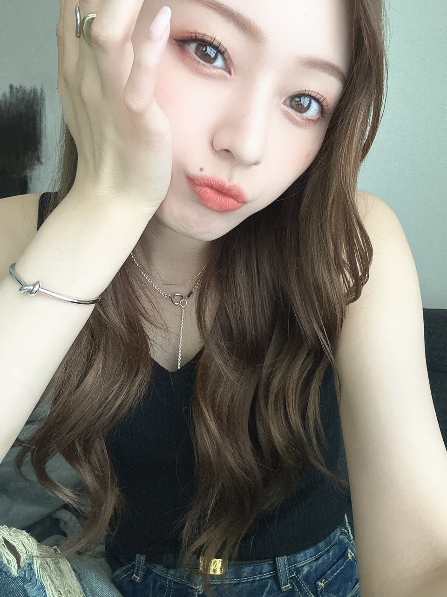
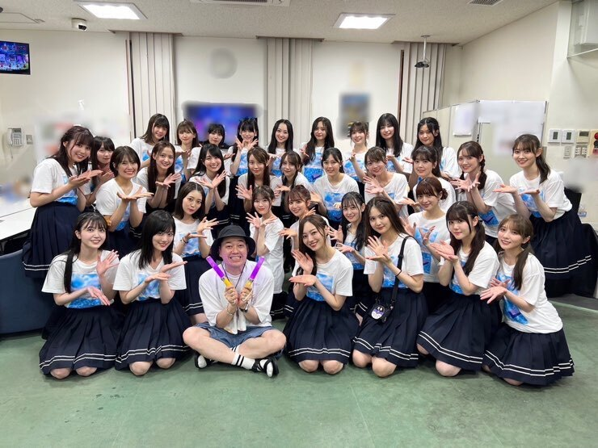
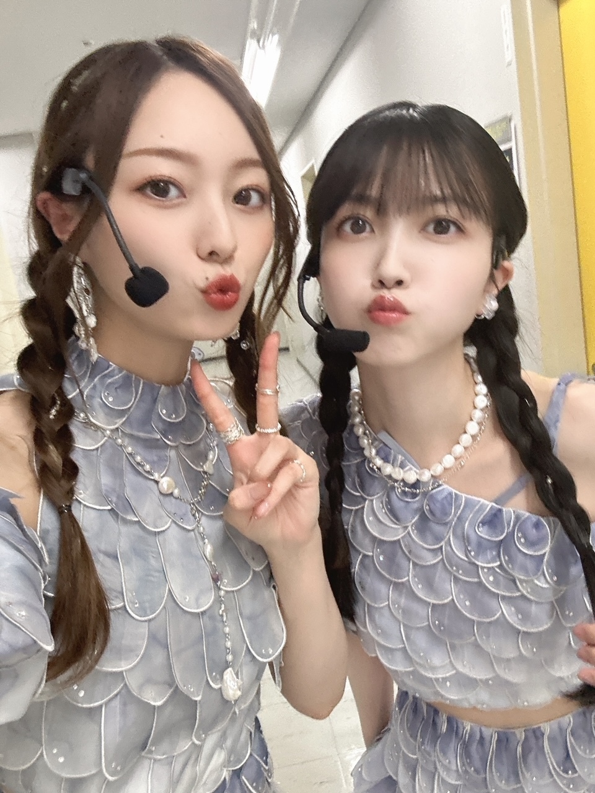
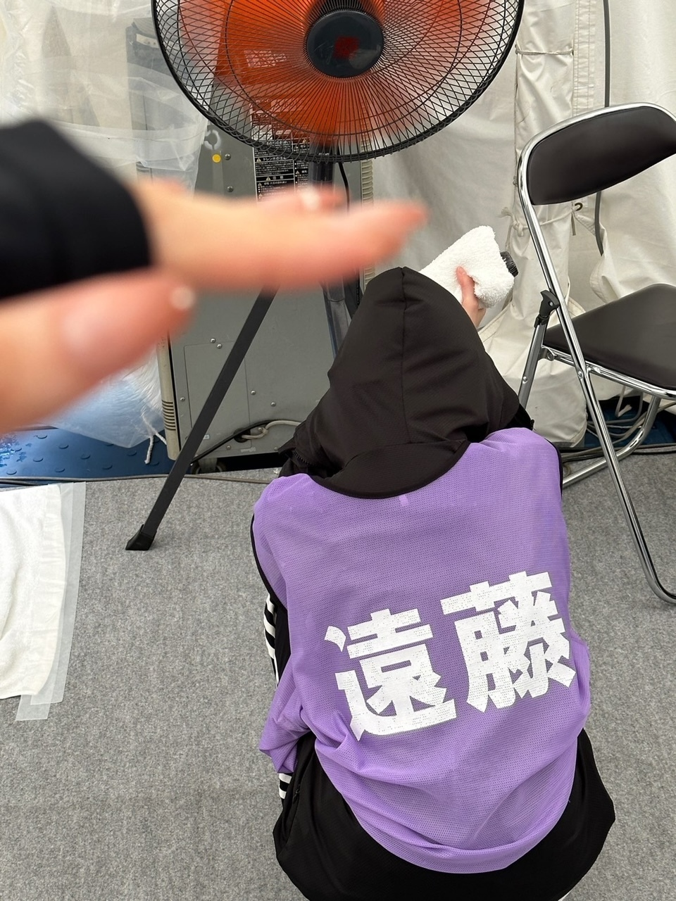
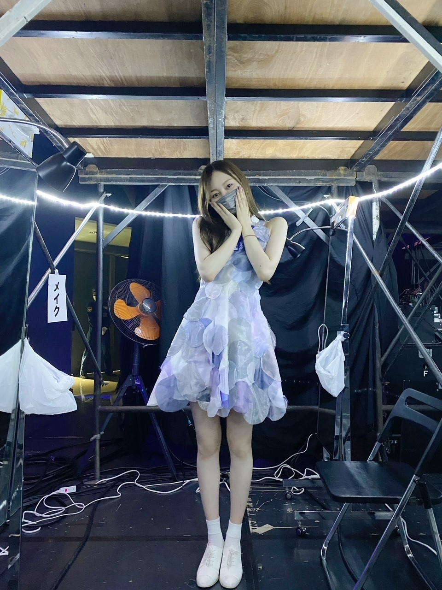

はい、 のひとつ返事で それより多くの何かを受け取ったり 渡したりできたら

だいすきな金木犀を
少しでも長く味わえるといいのだけど
遅くなりましたが、
真夏の全国ツアー２０２３
皆様 たくさんの応援、本当にありがとうございました！
今までたくさん 乗り越えてきたもの、
あったけど
今回、またちょっと特別で
なかなかそう無いタイミングだと思うので
少しばかりつらつらと書きますね〜
この夏の２ヶ月、乗り越えるまでには
課題や不安要素が多すぎました。
だからこそ、終えた未来を想像するのが
とても難しかったし
楽しむ感情を手に入れるまでにも
いつもより時間がかかった気がします。
でも
時間がかかったからこそ
楽しい と思えたときの感情は
今までとはひと味違った快感だったー！

お兄ちゃんが来てくれたー！
心から、嬉しくて嬉しくて、涙でそうだったー。
日村さんはお仕事でね、
見ててくれたかなあ
個人的な話、失礼しますが
キャプテンとして初めて回るツアーでした！
話す言葉も、１６公演分！
自分主観で話すと言うよりは
皆が違和感を感じない言葉を 残さないといけない
とても難しいなあと感じました。
そりゃあ
上手くいかない日もあったろうし
何話した、かなんて、ほぼ覚えてないくらい
毎公演後は脱力していたけど
日々空気感の変わるステージで
想う感情がたくさんあって
そのおかげで、なんとか
なんとか言葉を紡いでいけたのかなあと、思います。
とにかく私は
半年前、キャプテン就任時の映像を見返した時に
見返せるようになったときに
あの時の自分にはもう なっちゃだめだなーと
思っていたので、
自分を大きくどっしり見せる時も
必要だ、と 心に唱え挑んだツアーでしたね！

この夏、
喜怒哀楽全部 共にしてくれました
いつもありがとう(^^)
みんな すごく自信無さそうなんですよ、
無さそうというか、きっと無いんですけど
でも全然
みんなとんでもなく、すごいよね(^^)
自分に自信 持てなくても
人に対して自信を持たせてあげられる子達ばかりなんですね、
そんな支え合いの瞬間をたくさん見てきました。
この夏は
みんなに対して
かっこいいな〜って、思った！
心から尊敬しているし
この子たちを 先導できるように、というか
見てきたものをしっかり
伝え続けなきゃなと 思いました
気づき
って、とっても大切ですよね、でも難しいのだけど

勝手に撮ったやつ、よしよし
まあもちろん、当たり前に
プレッシャーもあったけど
これだけのものを今の私たちに任せてもらえたことと
担えるようになるまでやってきた事実が
ちゃんと 精神にも身体にも刻まれた毎日だったので
ものすんごく、達成感。
改めまして。
ファンの皆様、
いつも本当にありがとうございます。
感情をステージで出す 、ということは
でも、怖さをかなり伴うことでもあるのですが
そのうえで
客席にある目線が温かくなければ
だせないし、成立しないんです、
客席に優しさがあったから、
隠さず さらけ出せたと思います！
心から、ありがとうございました。
それから、
マネジメントの皆さんにも
私たちが不安だった以上に
手探りな部分、あったと思うし
１２年経って 初めて、先頭に立つ子達が変わって
そんな私たちって
長くやってきた事実があるとはいえ、まだ、
未知数なところはあったから。
でも、たくさん信じてくれて 任せてくれて
期待してくれて、とても嬉しかったです。
ファンの皆様はもちろんのこと、
それよりももっと前に
私たちの一番近くで、側で支えてくれるこの人たちに
笑ってほしいと思ったし、
私たちを見て 希望とか 未来とか
プラスの何かを感じてもらいたかった、です。
そのために頑張っていたのも、あります。
いや、頑張れた理由のひとつでもある、かな！
結果はどうであれ、
私はこのチームで ここに関わってくれる人たちが
心から 大切で、好きだなあと 思いました。
(^^)
頑張ります！ここからも！
年末まで！突っ走りますかね！

これ去年
あ、７周年迎えました！
ありがとうございます。
もっともっとやりたいこと、
出来ることたくさんあるはず！
９月２８日に放送されます、ドラマ
「筋トレサラリーマン 中山筋太郎」に
出演させて頂くことになりました。
ドラマ、映像研以来じゃないでしょうか。
念願です、嬉しいです！
今年は舞台のお仕事もできて、
まだまだお芝居の幅も広げていけますように！
安定とか イメージとか
なんとなくの固定概念で囚われるのが
今、８年目になったからこそ、より避けたくて
だからそれを突破できる
ドカーンとなにか、大きななにか、
成し遂げたいです。
もっともっと、頑張ります！
おやすみなさい！
また、書きます。
Original：https://www.nogizaka46.com/s/n46/diary/detail/101907?ima=4932&cd=MEMBER